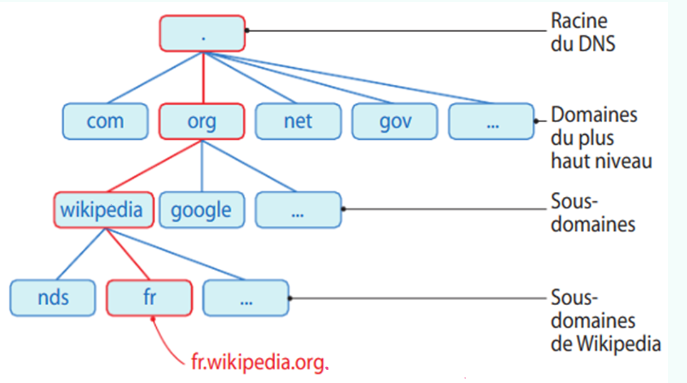
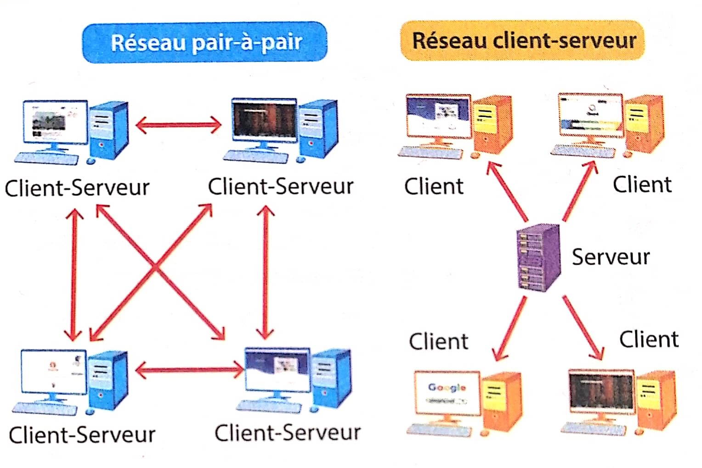

DNS et réseaux pair-à-pair
Le protocole DNS
Un système a été créé en 1983 pour associer chaque adresse IP à un "texte", comme un annuaire fait l'association entre des numéros de téléphones et des noms et adresses de personnes.
Ce système s'appelle le DNS pour Domain Name System (Système de noms de domaine en français).
Il vous permet par exemple de n'avoir à saisir que l'adresse symbolique fr.wikipédia.org au lieu de l'adresse IP correspondante : 91.168.174.232.
Chaque nom de domaine est organisé de manière très hiérarchique. Voici un exemple :
Nous allons décrire ici la hiérarchie du nom de domaine " fr.wikipédia.org. " :

Le système des noms de domaine consiste en une hiérarchie dont le sommet est appelé la racine. On représente cette dernière par un point.
Ce la correspond au dernier point de " fr.wikipedia.org ."
Chaque séparation de niveau d'un domaine est matérialisée par un point.
Ainsi :
le domaine de plus haut-niveau est " fr.wikipedia. org."
le domaine de niveau inférieur est " fr. wikipedia.org." ; on dit que wikipedia est un sous-domaine du domaine org.
le domaine de niveau encore inférieur est " fr.wikipedia.org." ; on dit que fr est un sous-domaine de wikipedia.
Le point final correspondant à la racine est souvent sous-entendu dans un nom de domaine.
Application:
À l'aide de l'exemple précédent, préciser quel est le domaine de plus haut niveau de l’adresse www.education.gouv.fr ?
Que représente www dans l'adresse www.education.gouv.fr ?
Les réseaux pair-à-pair
Le réseau pair à pair est un protocole de communication. Les ordinateurs qui en sont équipés peuvent aussi bien recevoir des données, qu'envoyer.
Chaque poste est aini à la fois client (lorsquíl reçoit) et serveur (lorsqu'il envoie).
Un exemple de tel protocole d'échange est le protocole BitTorrent: lorsque l'on télécharge un film, on récupère les paquets qui le composent provenant de différents ordinateurs. On peut alors à son tour envoyer ces paqurets à d'autres ordinateurs

Bilan
Les ordinateurs d’un réseau pair-à-pair ont une spécificité : ils sont à la fois client et serveur et peuvent donc tous demander ou envoyer des informations.
Ceci accélère les échanges de données et évite l’engorgement du réseau.
Il existe plusieurs protocoles comme le BitTorrent. Il permet à des ordinateurs en réseau d’échanger des fichiers par bloc. Ils peuvent à la fois les recevoir – ils sont alors clients – et/ou les émettre – ils sont alors serveurs. Lorsqu’un ordinateur reçoit un bloc, il en devient automatiquement distributeur.
Les réseaux pair-à-pair peuvent être utilisés pour s'échanger illégalement des fichiers : ils sont contrôlés par l' Autorité de Régulation de la COMmunication audiovisuelle et numérique (ARCOM) .
Les réseaux pair-à-pair sont aussi utilisés légalement (DNS, mise à disposition ou mise à jour de logiciel, calcul distribué par exemple pour la technologie Blockchain, réseau sociaux décentralisés, ...)
🧠 Teste tes connaissances
Réponds aux questions puis clique sur « Vérifier » — la correction s'affiche aussitôt.
1. À quoi sert le système DNS (Domain Name System) ?
2. En quelle année le système DNS a-t-il été créé ?
3. Dans un réseau pair-à-pair, quel est le rôle de chaque poste ?
4. Quel organisme contrôle les réseaux pair-à-pair utilisés pour échanger illégalement des fichiers ?